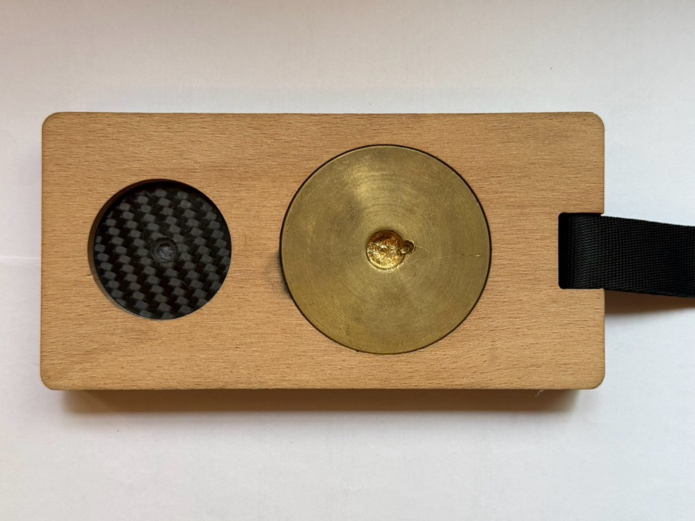
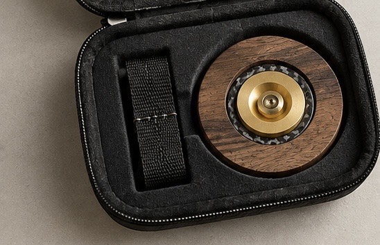
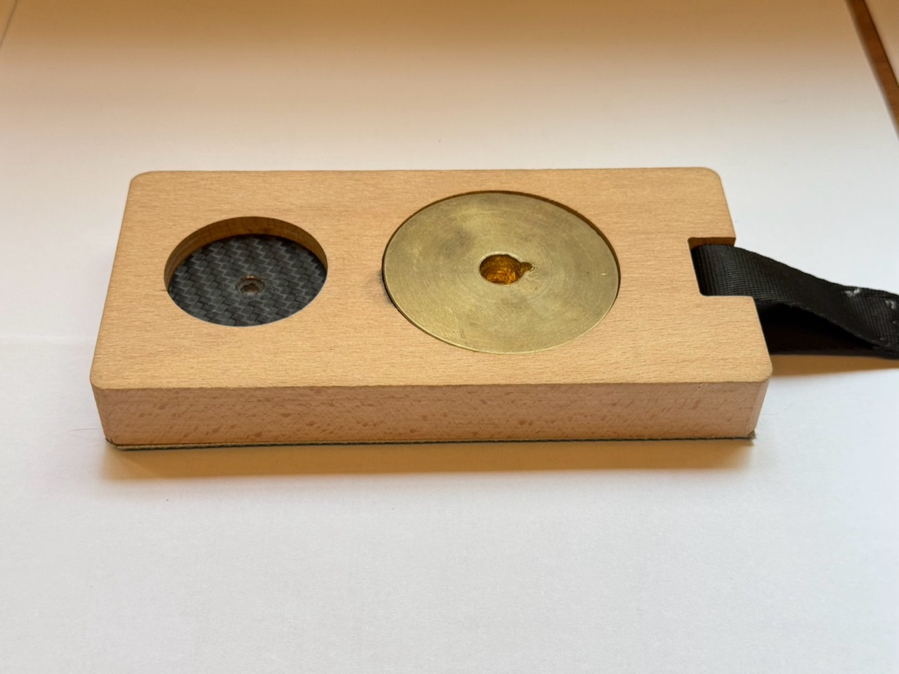
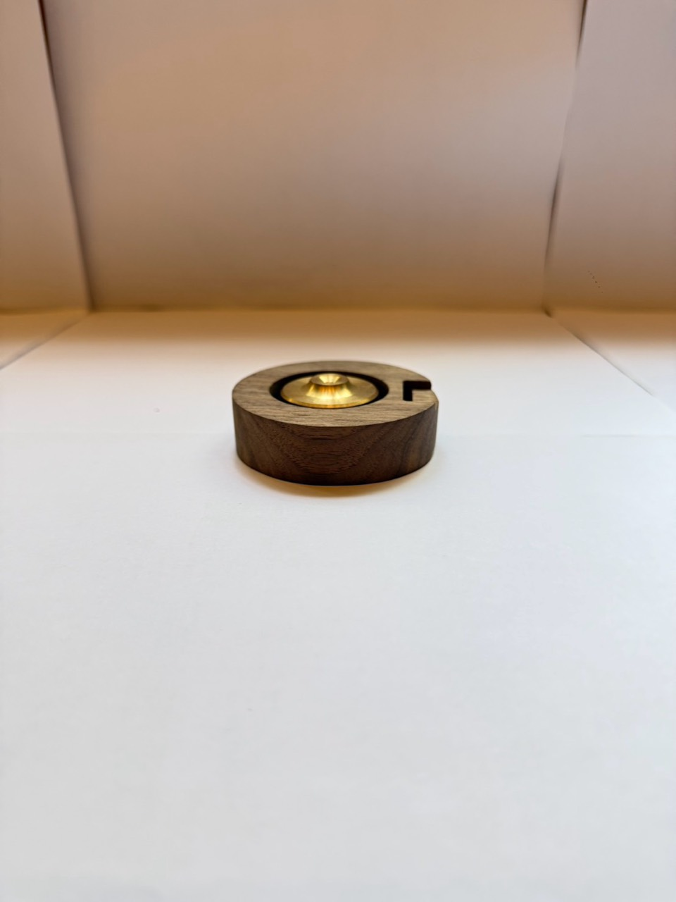
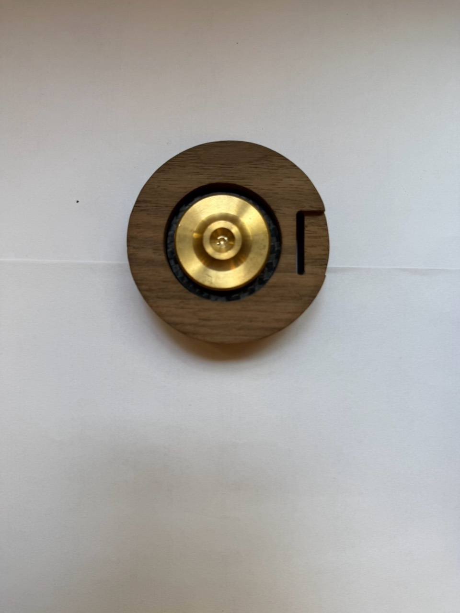

01Wood木材保留觸感，也留下溫度。

學琴的每一天，不一定在音樂廳裡發生。可能是在房間、宿舍、教室，或晚餐後不想打擾別人的一小段時間。
SLAVA 從這些真實的練習時刻開始，讓一件小小的器材，成為你與大提琴之間更靠近的媒介。
看見我們如何思考以下為暫定產品代號。
正式命名與規格仍待測試後確認。


SLAVA / 01
延伸琴身的水平線條，把天然木材、黃銅與碳纖維放進一個可攜式的聲音物件裡。適合從日常練習開始，慢慢找到自己的聽感。
SLAVA 的外觀不是裝飾，而是我們思考聲音、重量、觸感與日常使用的方式。



設計成可以離開工作桌，進入真實的練習空間。
保留你的手感與發音，不讓工具蓋過演奏本身。
從音色、共鳴與空間開始，重新找到練習的方向。
我們不是想替你演奏。
只是想讓你更清楚地聽見自己。
這些是目前的產品原型影像；正式上市前會補上琴上實拍、安裝示意與前後音色測試。
留下 Email，搶先收到試用、早鳥與嘖嘖募資通知。也可以告訴我們，你現在用哪一種方式練琴。
SLAVA 是為大提琴練習場景設計的聲音增幅工具。現在展示的是產品原型，正式功能、適配方式與音色測試會在募資前完整公開。
目前先以 LONG／長方款與 ROUND／圓形款作為工作分類，實際差異會依聲學測試、安裝方式與使用情境確認後再定案。
我們會在完成琴上實測、成本、交期與包裝驗證後公開日期。加入候補名單，就能收到第一批試用與早鳥資訊。